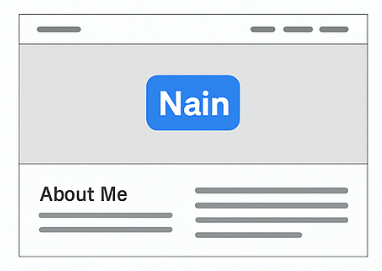
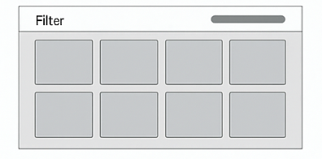

Overview
Purpose
The purpose of this website is to showcase my personal brand, technical skills, and development projects as a Computer Science student. It will serve as an online portfolio where employers, recruiters, and collaborators can learn more about who I am and what I can do.
Audience
This site is designed for potential employers, internship recruiters, classmates, and collaborators who are looking to evaluate my skills and development experience. The audience includes individuals interested in junior developers, student projects, and real-world technical work.
Dynamic elements
This website will use JavaScript to dynamically load my projects from a modular data file. It will display project cards using arrays and objects, allow filtering and sorting using array methods such as filter(), map(), and forEach(), and update the DOM in response to user interactions. ES modules will be used to keep the code organized. Conditional logic will be used to toggle themes, validate forms, and react to user events like button clicks.
Branding
Website Logo
Style Guide
Color Palette
Palette URL: https://coolors.co/2563eb-1e293b-facc15-ffffff-0f172a| Primary | Secondary | Accent 1 | Accent 2 |
|---|---|---|---|
| #2563EB | #1E293B | #FACC15 | #0F172A |
Typography
Heading Font: Poppins
Paragraph Font: Inter
Normal paragraph example
This portfolio is designed to be clean, modern, and easy to navigate. The layout will highlight content while keeping the interface visually appealing and simple.
Colored paragraph example
This is an example of a styled paragraph that might be used for highlighting important information or section headers.
Navigation
Content
Home page
Home page content will include a hero section introducing myself with a photo or illustration, a short professional summary, and a list of my main skills such as JavaScript, HTML/CSS, C#, AWS, and Accessibility. The home page will also include a brief “About Me” section with information about my background as an international CS student and my goals as a developer.
Images: Personal avatar or picture, icons representing skills, background illustrations.
Projects Page
The Projects page will dynamically load a series of project cards. Each card will include an image, project title, short description, technologies used, and a link to GitHub. Projects may include: CSE 210 programs (Journal, Scripture Memorizer, Eternal Quest), WDD 131 projects (CoolPics, Recipe App), accessibility work, and AWS cloud labs.
The page will also include filtering options (ex: JavaScript, C#, Web, AWS) implemented through JavaScript.
Images: Screenshots of projects, GitHub icons, technology icons.
Wireframes
Two wireframes will be included: one for the Home page and one for the Projects page.
Home
The Home page wireframe will show the hero section at the top, an "About Me" section in the middle, and a skills grid near the bottom.
Projects Page
The Projects page wireframe will show a filter section at the top followed by a responsive grid of project cards loaded dynamically with JavaScript.
